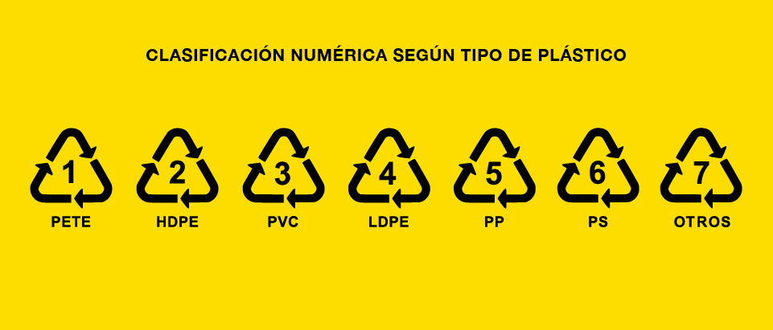

¿Que es el plastico?
«Plástico» es el término habitual para describir una amplia gama de materiales sintéticos o semisintéticos que se utilizan para una inmensa cantidad de aplicaciones. Miremos donde miremos, vemos plástico. Utilizamos productos de plástico para que la vida sea más limpia, más fácil, más segura y más agradable. Encontramos plástico en los envases, la ropa, los edificios, los dispositivos médicos, los coches, los móviles...
Los plásticos son materiales orgánicos, igual que la madera, el papel o la lana. Las materias primas que se utilizan para producir plástico son productos naturales como la celulosa, el carbón, el gas natural, la sal y, por supuesto, el petróleo. Se han convertido en el material moderno preferido porque permite equilibrar las necesidades de hoy en día con la protección del medio ambiente.
El término «plástico» proviene del griego «plastikos» que significa que se puede moldear. Se refiere a la maleabilidad, o plasticidad, del material durante la fabricación, lo que permite fundirlo, prensarlo o extrusionarlo para obtener diferentes formas, como láminas, fibras, placas, tubos, botellas, cajas, etc.
Usos del plástico
El plástico es un material inmensamente versátil, ideal para una amplia gama de aplicaciones industriales y de consumo. La relativamente baja densidad de casi todos los tipos de plásticos aporta a los productos de plástico el beneficio de la ligereza. Y, aunque la mayoría tienen unas propiedades de aislamiento térmico y eléctrico excelentes, se pueden fabricar plásticos que sean conductores de electricidad si es preciso. Son resistentes a la corrosión de muchas sustancias que atacan a otros materiales, por lo que son duraderos e idóneos para usarlos en aplicaciones muy exigentes. Algunos son transparentes, por lo que sirven como dispositivos ópticos.
Se pueden moldear fácilmente para obtener formas complejas y permiten la integración de otros materiales para formar productos ideales para una amplia gama de funciones. Además, si las propiedades físicas de un plástico determinado no cumplen plenamente los requisitos, se puede modificar su equilibrio de propiedades con relleno, colores, agentes espumantes, retardantes de llama, plastificantes, etc., para satisfacer la demanda de una aplicación específica.
En principio se pueden crear plásticos con casi cualquier combinación de propiedades para adaptarlos a prácticamente cualquier aplicación imaginable. Debido a esas atractivas propiedades, cada vez se utiliza más el plástico en las siguientes aplicaciones.
